음성 발화Voice Input
사용자가 직접 건네는 발화 신호의 경우 음성 데이터와 함께 목소리의 톤, 높낮이, 속도 등 미세한 운율 모두를 명시적 인풋으로 포착합니다.
말하기 전, 스킵은 이미 귀 기울이고 있죠.
언제든 주변을 살피며 다음을 준비합니다.

24시간 조용히 찰나를 준비하는 일
당신이 경험하는 모든 시간이 곧 스킵의 시간
주변 공간의
물리적 도메인을
상시 탐색
지능형
반사 표면
제어
스킵은 패킷을
통해 자신을
환경에 모핑함


Sensing Logic
스킵은 당신이 발을 내딛기도 전에 공간의 돌다리를 먼저 두드려봅니다.
첨단 RIS* 기술과 정밀 무선 통신으로 주변을 탐색하여,
안전하게 디딜 수 있는 주변 환경과 그 기능들을 실시간으로 리스트업하죠.
이제 철저하게 확인된 디딤돌 위에서, 그저 물수제비를 뜨듯 가볍게 흐름을 이어가기만 하면 됩니다.
Sensing Logic
스킵의 패시브 레이어는 배경에서 끊임없이 움직이고 있습니다.
당신이 깊이 잠든 새벽이든, 분주하게 움직이는 낮이든, 어디에 있든 말이죠.
덕분에 목적이 생기는 그 찰나, 곧바로 완벽한 실행 경로가 완성됩니다.

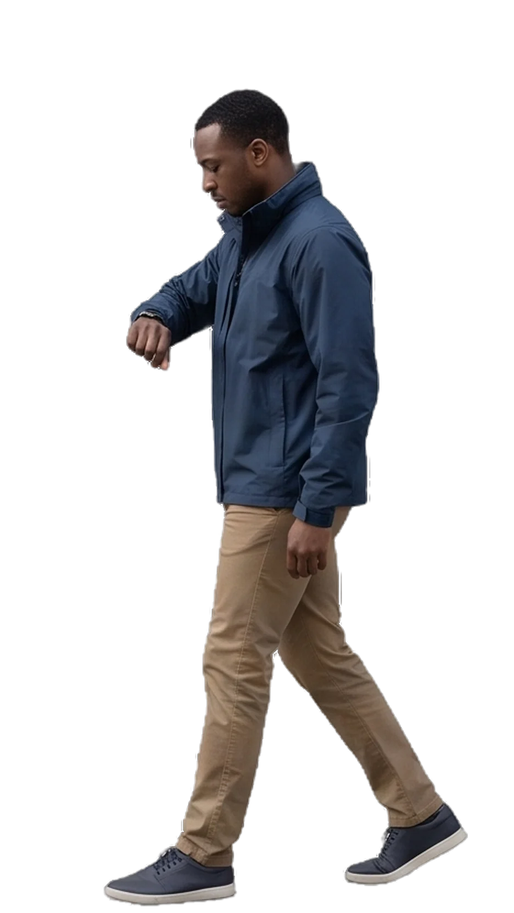
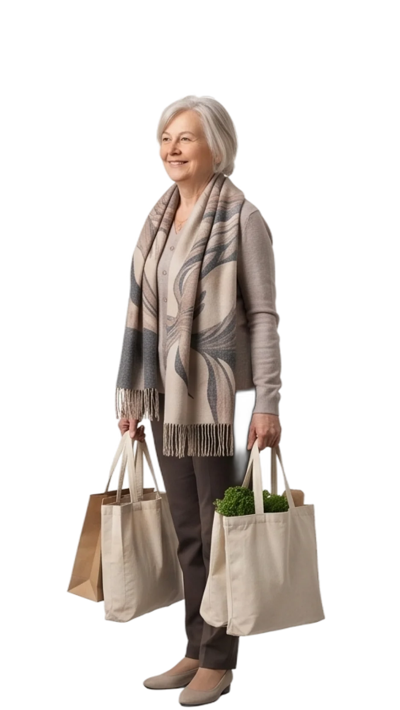
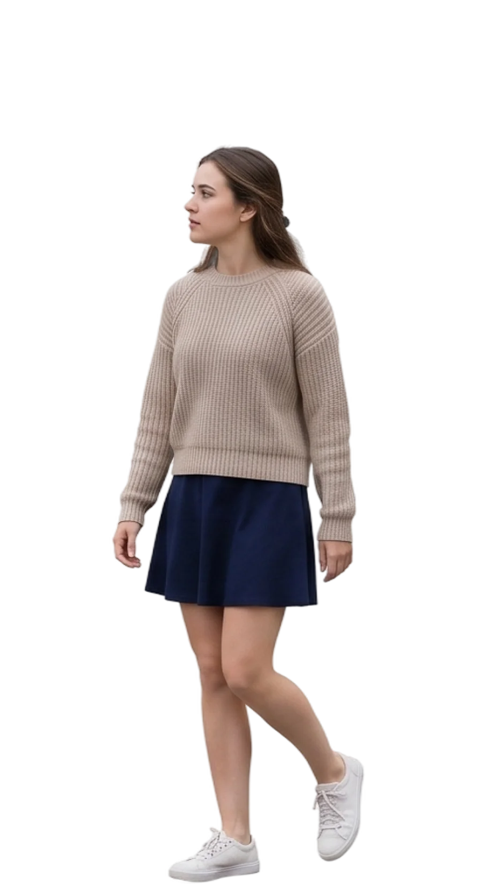
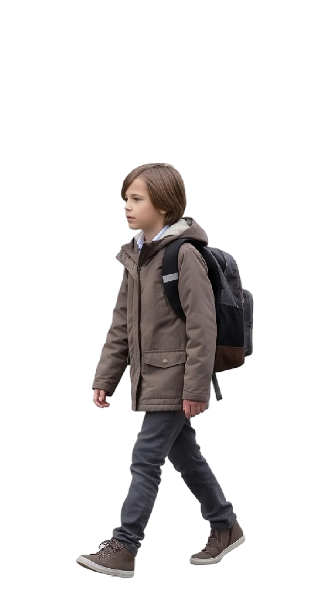
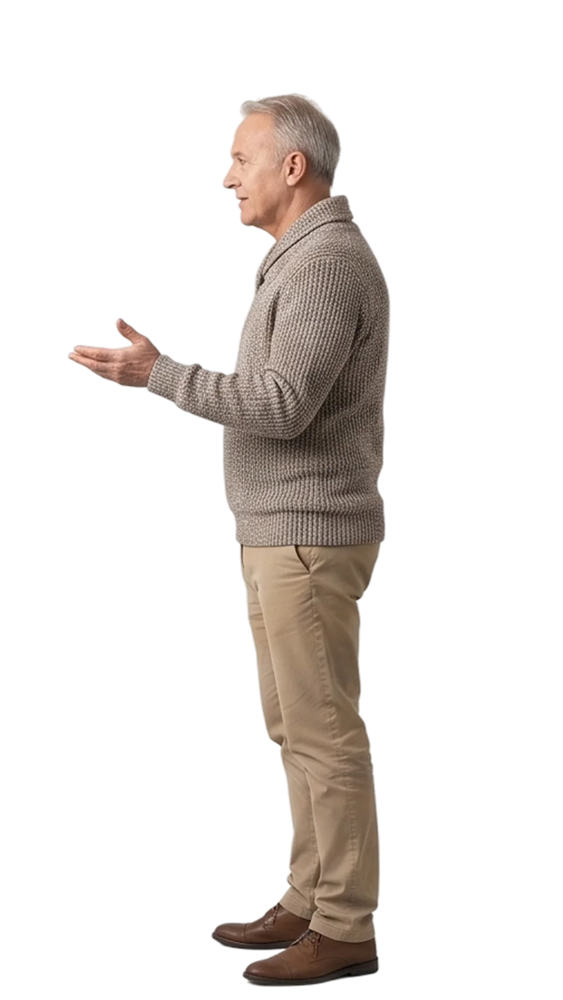
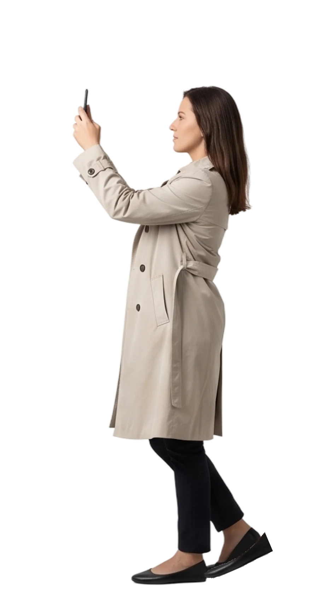
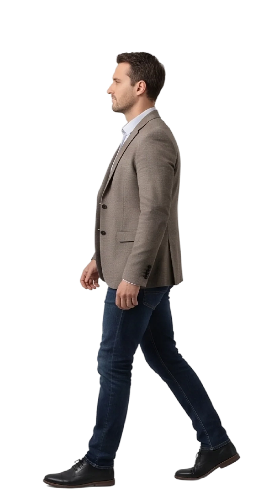
당신의 모든 걸음은 스킵의 새로운 기준이자 세상이 됩니다.
걸음을 옮길 때마다, 센싱 로직이 배경에서 끊임없이 함께하니까요.
Input Logic
완벽하게 다듬어진 지시나 명령은 필요 없습니다. 스킵은 발화의 운율과 문장 속 섬세한 단서에서 맥락을 완벽하게 파악하니까요. 때로는 말하지 않더라도, 당신의 마음을 찰떡같이 알아줍니다.
사용자가 직접 건네는 발화 신호의 경우 음성 데이터와 함께 목소리의 톤, 높낮이, 속도 등 미세한 운율 모두를 명시적 인풋으로 포착합니다.

타이핑을 통해 입력된 문자 신호의 경우구두점이나 부사처럼 사용자가 텍스트에 남긴 미세한 흔적들을 명시적 인풋으로 획득합니다.

사용자가 직접 말하지 않은 암묵적 신호로, 스키퍼블에 있는 외재적 데이터와 사용자 고유의 내재적 루틴을 입체적으로 종합해 받아들입니다.
Input Logic
목적이 시작되는 이 순간은 액티브 레이어라는 거대한 시공간적 바운더리가 열리는 시점입니다. 이제 사용자의 목적은 A2A 연산 형태로 변환되며 본격적인 연산이 시작되죠.
Active Layer
사용자의 목적이 최초로 발생한 시점부터 달성되는 시점까지의 시공간적 바운더리
2보 전진을 위한 1보 후퇴
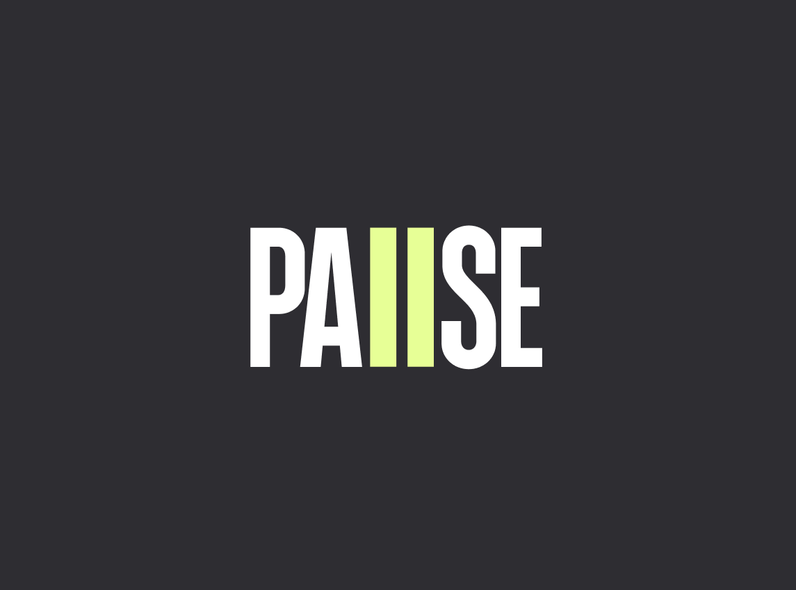
완벽한 스킵에게도 때로는 쉴 틈이 필요합니다.
명시적인 명령이 있거나 스킵 불가 영역을 마주할 때
작동하는 일시중단 로직은 시스템을 완전히 종료하는
대신에 목적 단위로 잠시 숨을 고르게 만들죠.
Principle 01
스킵과의 직접 상호작용은 잠시 멈추지만, 여전히 센싱을 통해 준비 상태를 유지합니다.
Principle 02
스킵은 사용자의 발화 단서를 미리 추론하여 예측되는 다음 시공간 속에서 기다립니다.
Principle 03
새로운 목적 구간이 시작되는 순간 별도의 조작 없이 깨어나며, 흐름을 복구합니다.
|
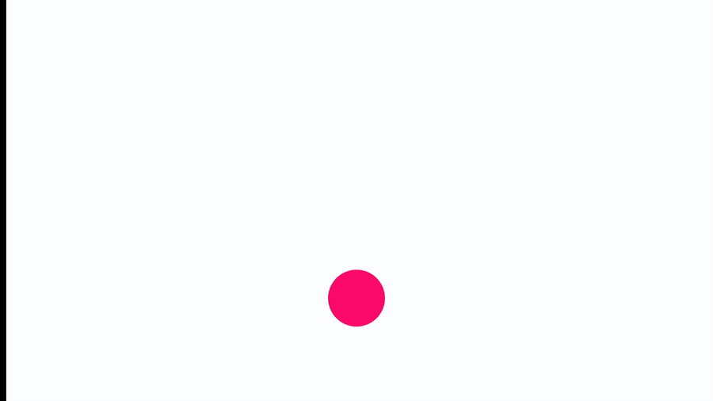
목적은 행동으로
행동은 온전한 기능으로
스킵이 없었던 시절 우리는 새로운 환경을 마주할 때마다
무엇을 어떻게 조작해야 하는지 스스로 헤매고 고민해야 했죠.
Keep on Keepin' on
이해하고 생각하고 계획하고
도미노처럼 끊김없이
모든 자원을 영리하게 결합하여, 우리가 미처 생각하지 못한
창의적인 해결책을 물밑에서 묵묵히 완수하는 Skeep AI™
01
Parsing Logic
사용자 의도를 기반으로 목적을 태스크로
구조화하는 단계
02
Mapping Logic
구조화된 태스크를 실행 가능한 형태로
변환하는 단계
03
Morphing Logic
실행 블록이 담긴 패킷을 스키퍼블에
전송하는 단계
PARSING
01
Parsing
거시적인 목적과 목표를 작고 관리하기 쉬운 미시적 목적 및 기능의 범위로 쪼개는 과정

툭 던진 생각 너머,
내 안의 진짜 목적을 읽다
복잡한 맥락 속에 숨겨진 진짜 의도를 파싱하여,
시스템이 처리할 수 있는 논리적 규격으로 변환하는 단계
Principle 01
사용자의 의도 추출
사용자의 인풋에서 불필요한 수식어를 걷어내고, 핵심 명사와 동사 위주로 목적을 잘게 쪼갭니다.
Principle 02
맥락과 암묵적 목적 반영
명시하지 않은 공간적 단서와 사용 패턴을 분석하여, 생략된 암묵적 목적까지 명확하게 찾습니다.
Principle 03
데이터 트리플 생성
파싱된 모든 파라미터는 스킵 아키텍처의 최상위 트리거인 목적-행위-기능 트리플로 구성됩니다.
Skeep AI™
수만 가지 제약 아래,
단 하나의 완벽한 현실만
스킵은 물리적 실체가 없더라도 공간, 기기, 거리, 사람 수 같은 물리적 제약을 이해하는 것을 전제로 생각합니다.
현실을 필터링하는 이 정밀한 감각이야말로 스킵이 세상을 이해하는 핵심 능력입니다.
Principle 01
물리적 제약과 적합성
Physical Constraints & Appropriateness
스킵은 사용자가 머무는 공간의 구조와 사물 간의 거리를 본능적으로 계산합니다. 좁은 공간에서의 무리한 동선이나, 물리적으로 불가능한 인터랙션을 걸러냅니다. 3차원 공간이 가진 한계를 명확히 이해함으로써, 현실에 가장 적합하고 유연한 움직임만을 제안합니다.
Principle 02
시스템 가용성과 실현 가능성
System Availability & Feasibility
주변 하드웨어의 스펙과 네트워크 상태를 실시간으로 파악합니다. 수많은 연결 가능성 속에서 무리한 연산을 강요하지 않으며, 현재의 시스템 환경이 지연 없이 가장 안정적으로 소화할 수 있는 방식만을 채택합니다. 보이지 않는 곳에서 가장 매끄럽고 실현 가능한 뼈대를 구축합니다.
Principle 03
사회적 수용성
Social Acceptability
스킵은 타인과 함께하는 맥락을 읽어냅니다. 공공장소인지, 프라이빗한 환경인지 구분하여 사용자가 심리적 저항감 없이 행동할 수 있는 방식을 선택합니다. 기술의 개입이 주변을 불편하게 만들거나 사용자를 민망하게 하지 않도록, 가장 매너 있고 자연스러운 선을 지킵니다.
데이터 트리플 실행 블록
실행 블록
하나의 목적
모두의 언어로
스마트폰부터 자동차, 피지컬 AI까지. 사용자의 목적은 물밑에서 각 환경의 눈높이에 맞는 프로토콜로 완벽하게 동시 통역됩니다. 아무리 파편화된 환경이라도 상관없습니다. 스킵을 거치는 순간, 세상의 모든 기기는 마치 모국어를 듣듯 당신의 의도를 읽고 움직이기 시작하니까요.
수백만 개의 경로 중,
가장 완벽한 궤적을 찾아서
commute
commute
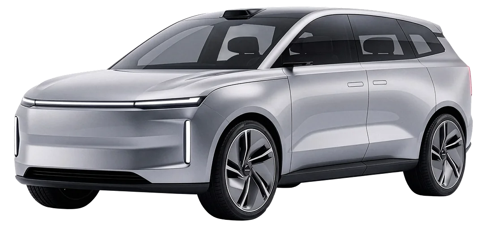
Car
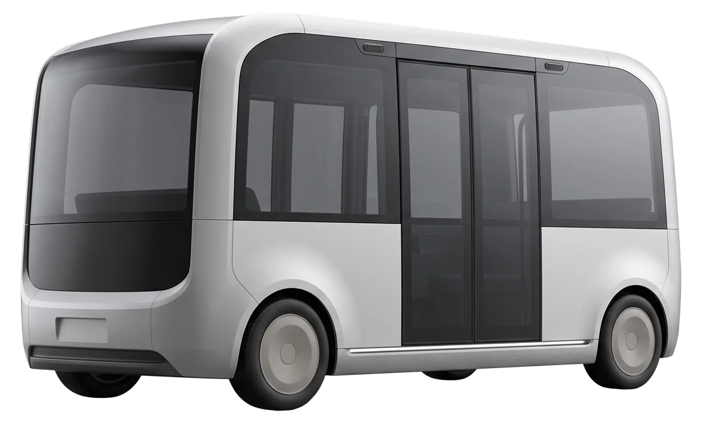
Bus
drink
drink
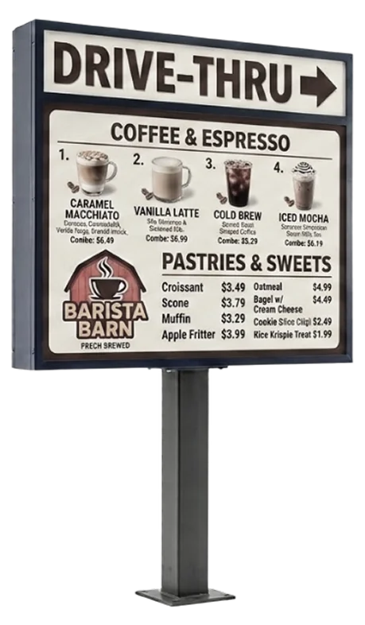
Drive-thru
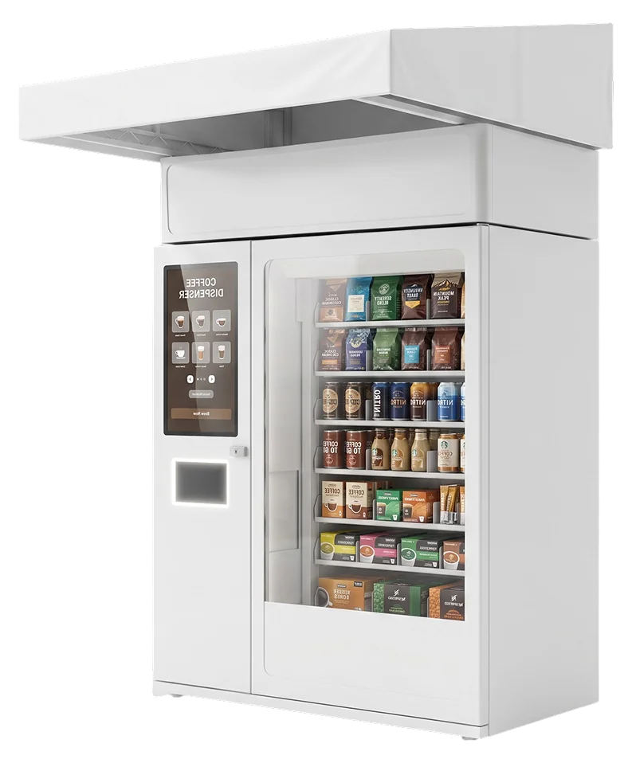
Vending machine
pre-work
pre-work
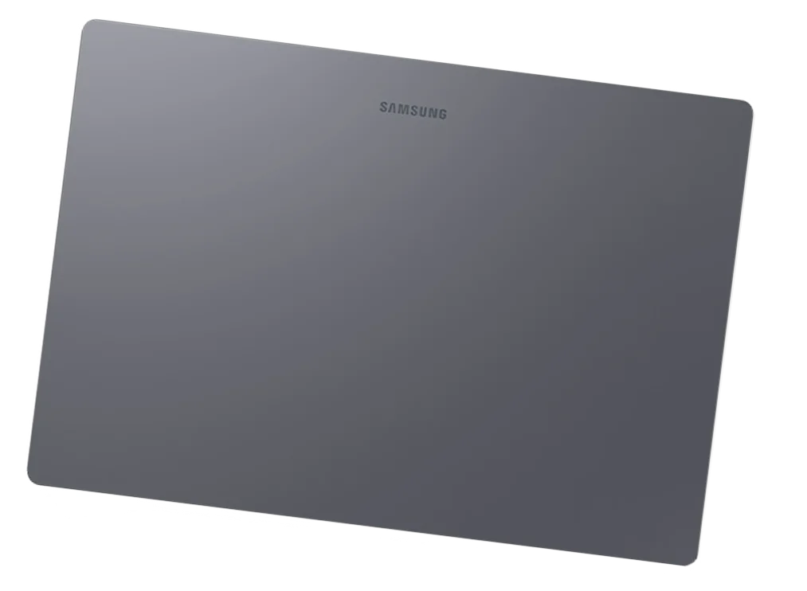
Laptop
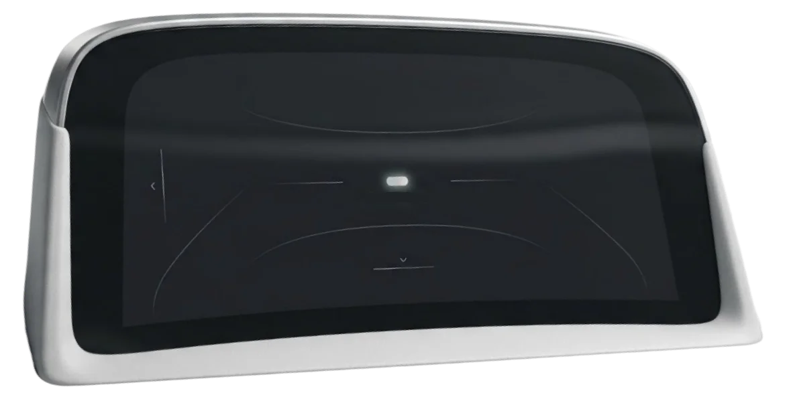
Passenger display
briefing
briefing
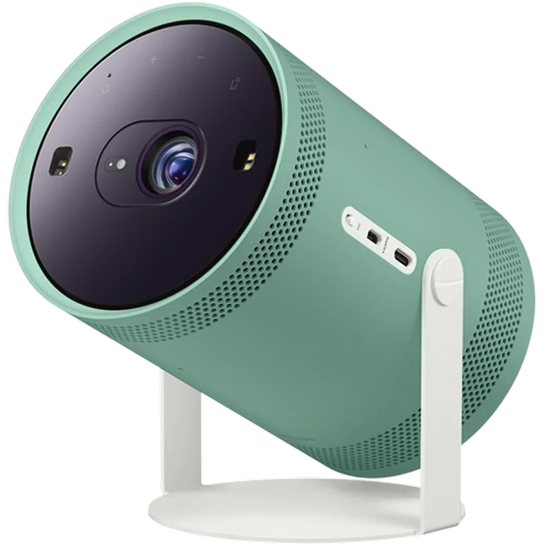
Beam projector
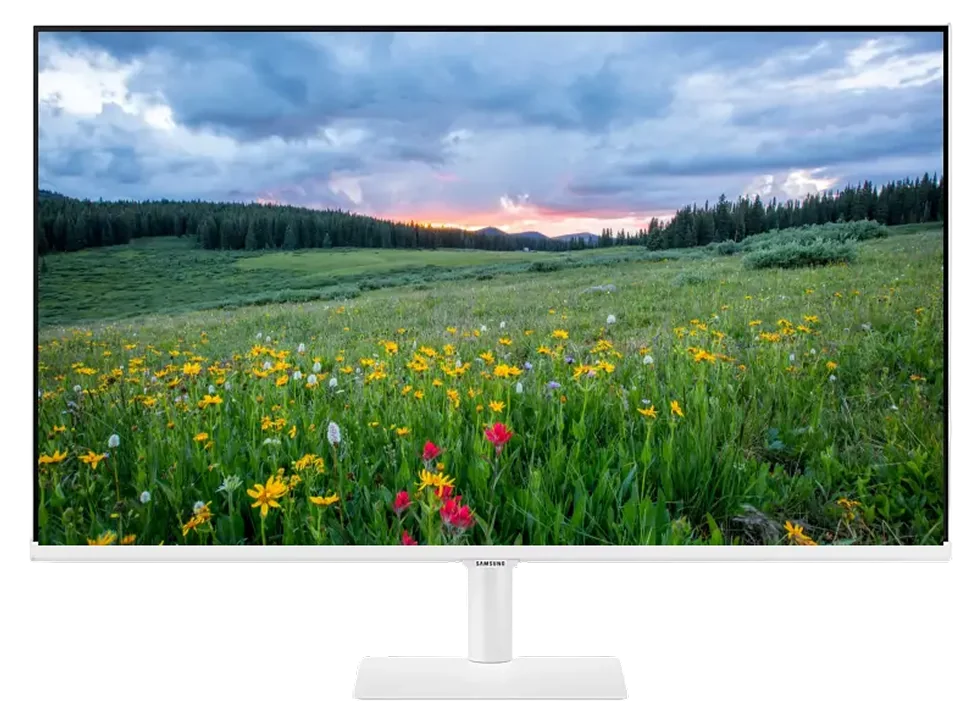
Monitor
파싱을 통해 구조화된 개별 태스크 트리플을
실제 환경과 소통 가능한 실행 블록으로 변환하는 단계
Principle 01
적절한 후보 매칭
현재 제어 가능한 스키퍼블 후보군을 근거로, 지금 이 목적에 적합한 리소스를 선별합니다.
Principle 02
타당성 교차 확인
파싱이 이미 확인한 물리적 제약을 후보군에 다시 대조하여, 실행 가능한 기능 조합만 남깁니다.
Principle 03
실행 블록 변환
필터링을 거쳐 살아남은 최적의 기능을 결합하여, 하나의 완벽한 '실행 블록' 구조로 정형화 합니다.
선명해진 스킵의 청사진, 이제 현실로 도약할 시간
Dispatch
실행블록과 최소 유효 맥락을 패킷에 실어
사용자 곁의 환경에 전달하는 단계
각 환경의 에이전트가 곧바로 사용자의 경험을 이어갈 수 있도록
사용자 곁의 서비스와 제품, 공간 어디든 척척
실행 블록과 맥락 전달
연산이 끝난 실행 블록에 최소 유효 맥락(MVC)을 실어, 확정된 각 환경으로 전달합니다.
구독 플랜 기반 개수 제한
동시에 전달할 수 있는 패킷 수는 사용자의 구독 플랜에 따라 정해지며,
각 환경의 자율적 판단
전달받은 각 환경의 에이전트는 스스로 판단해, 블록을 즉시 처리하거나 기능을 다운로드 합니다.